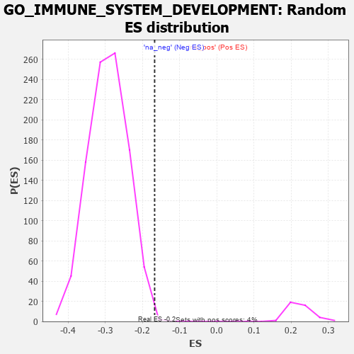

| | | Dataset | 7d |
| Phenotype | NoPhenotypeAvailable |
| Upregulated in class | na_neg |
| GeneSet | GO_IMMUNE_SYSTEM_DEVELOPMENT |
| Enrichment Score (ES) | -0.16750816 |
| Normalized Enrichment Score (NES) | -0.5711492 |
| Nominal p-value | 0.9979145 |
| FDR q-value | 1.0 |
| FWER p-Value | 1.0 |
Table: GSEA Results Summary
 Fig 1: Enrichment plot: GO_IMMUNE_SYSTEM_DEVELOPMENT
Fig 1: Enrichment plot: GO_IMMUNE_SYSTEM_DEVELOPMENT
Profile of the Running ES Score & Positions of GeneSet Members on the Rank Ordered List
| PROBE | GENE SYMBOL | GENE_TITLE | RANK IN GENE LIST | RANK METRIC SCORE | RUNNING ES | CORE ENRICHMENT | | 1 | MEOX1 | | | 39 | 3.159 | 0.0311 | No |
| 2 | SP3 | | | 131 | 1.391 | 0.0353 | No |
| 3 | SPI1 | | | 162 | 1.182 | 0.0449 | No |
| 4 | BCL3 | | | 202 | 1.047 | 0.0519 | No |
| 5 | RHOH | | | 228 | 0.987 | 0.0599 | No |
| 6 | SMAD5 | | | 231 | 0.979 | 0.0708 | No |
| 7 | DLL1 | | | 337 | 0.760 | 0.0660 | No |
| 8 | ARNT | | | 357 | 0.741 | 0.0720 | No |
| 9 | SOX13 | | | 380 | 0.717 | 0.0774 | No |
| 10 | BAX | | | 387 | 0.711 | 0.0847 | No |
| 11 | NBN | | | 405 | 0.696 | 0.0905 | No |
| 12 | MLH1 | | | 423 | 0.679 | 0.0961 | No |
| 13 | CCNB2 | | | 429 | 0.672 | 0.1031 | No |
| 14 | ERCC1 | | | 453 | 0.660 | 0.1077 | No |
| 15 | LEO1 | | | 463 | 0.655 | 0.1140 | No |
| 16 | THOC1 | | | 507 | 0.627 | 0.1157 | No |
| 17 | PKN1 | | | 535 | 0.619 | 0.1192 | No |
| 18 | SRF | | | 542 | 0.615 | 0.1255 | No |
| 19 | JMJD6 | | | 553 | 0.613 | 0.1312 | No |
| 20 | HES5 | | | 661 | 0.571 | 0.1240 | No |
| 21 | XRCC6 | | | 694 | 0.560 | 0.1263 | No |
| 22 | FST | | | 698 | 0.560 | 0.1323 | No |
| 23 | WDR61 | | | 734 | 0.549 | 0.1340 | No |
| 24 | HMGB2 | | | 892 | 0.507 | 0.1196 | No |
| 25 | HDAC5 | | | 900 | 0.506 | 0.1245 | No |
| 26 | PDE1B | | | 929 | 0.500 | 0.1266 | No |
| 27 | CTR9 | | | 964 | 0.492 | 0.1279 | No |
| 28 | UBA5 | | | 982 | 0.488 | 0.1313 | No |
| 29 | YAP1 | | | 1041 | 0.475 | 0.1292 | No |
| 30 | MEF2C | | | 1054 | 0.473 | 0.1331 | No |
| 31 | RBM15 | | | 1057 | 0.473 | 0.1382 | No |
| 32 | SRC | | | 1128 | 0.459 | 0.1345 | No |
| 33 | KMT2A | | | 1130 | 0.458 | 0.1396 | No |
| 34 | PSMD7 | | | 1152 | 0.454 | 0.1421 | No |
| 35 | PSMD2 | | | 1181 | 0.450 | 0.1436 | No |
| 36 | KAT8 | | | 1231 | 0.442 | 0.1423 | No |
| 37 | KAT7 | | | 1240 | 0.440 | 0.1463 | No |
| 38 | CDC73 | | | 1265 | 0.436 | 0.1482 | No |
| 39 | NKAP | | | 1337 | 0.422 | 0.1439 | No |
| 40 | SSBP3 | | | 1396 | 0.411 | 0.1412 | No |
| 41 | SOS1 | | | 1547 | 0.384 | 0.1263 | No |
| 42 | DCAF1 | | | 1559 | 0.381 | 0.1292 | No |
| 43 | PAF1 | | | 1588 | 0.376 | 0.1299 | No |
| 44 | ERCC2 | | | 1712 | 0.354 | 0.1181 | No |
| 45 | MEIS1 | | | 1723 | 0.351 | 0.1208 | No |
| 46 | KMT2E | | | 1730 | 0.350 | 0.1241 | No |
| 47 | PTBP3 | | | 1763 | 0.344 | 0.1239 | No |
| 48 | LRP5 | | | 1769 | 0.342 | 0.1271 | No |
| 49 | FNIP1 | | | 1798 | 0.338 | 0.1274 | No |
| 50 | PSMD4 | | | 1811 | 0.335 | 0.1297 | No |
| 51 | MSH2 | | | 1819 | 0.334 | 0.1326 | No |
| 52 | SGPL1 | | | 1820 | 0.334 | 0.1364 | No |
| 53 | TCF7 | | | 1848 | 0.328 | 0.1367 | No |
| 54 | PSMD6 | | | 1858 | 0.326 | 0.1393 | No |
| 55 | RBBP5 | | | 1875 | 0.323 | 0.1409 | No |
| 56 | CCR4 | | | 1959 | 0.312 | 0.1338 | No |
| 57 | EXO1 | | | 2002 | 0.304 | 0.1319 | No |
| 58 | RAF1 | | | 2011 | 0.303 | 0.1343 | No |
| 59 | HMCES | | | 2036 | 0.300 | 0.1346 | No |
| 60 | IRF4 | | | 2054 | 0.298 | 0.1358 | No |
| 61 | MEIS2 | | | 2063 | 0.296 | 0.1382 | No |
| 62 | SART3 | | | 2084 | 0.293 | 0.1390 | No |
| 63 | PSME4 | | | 2143 | 0.285 | 0.1348 | No |
| 64 | CNOT4 | | | 2161 | 0.283 | 0.1358 | No |
| 65 | SYK | | | 2186 | 0.278 | 0.1359 | No |
| 66 | ATAD5 | | | 2197 | 0.277 | 0.1378 | No |
| 67 | CREB1 | | | 2243 | 0.269 | 0.1351 | No |
| 68 | PSMF1 | | | 2251 | 0.268 | 0.1372 | No |
| 69 | REST | | | 2308 | 0.259 | 0.1330 | No |
| 70 | SIN3A | | | 2361 | 0.251 | 0.1292 | No |
| 71 | HIPK2 | | | 2389 | 0.247 | 0.1285 | No |
| 72 | LBR | | | 2395 | 0.246 | 0.1307 | No |
| 73 | KAT6A | | | 2444 | 0.237 | 0.1272 | No |
| 74 | ZC3H8 | | | 2486 | 0.229 | 0.1246 | No |
| 75 | MELK | | | 2499 | 0.227 | 0.1256 | No |
| 76 | KAT2B | | | 2502 | 0.226 | 0.1279 | No |
| 77 | SRP54 | | | 2544 | 0.220 | 0.1252 | No |
| 78 | PSMD5 | | | 2560 | 0.218 | 0.1257 | No |
| 79 | ROGDI | | | 2633 | 0.207 | 0.1189 | No |
| 80 | MITF | | | 2659 | 0.205 | 0.1180 | No |
| 81 | WDR7 | | | 2717 | 0.196 | 0.1129 | No |
| 82 | RORA | | | 2730 | 0.193 | 0.1136 | No |
| 83 | NSD2 | | | 2784 | 0.185 | 0.1089 | No |
| 84 | WDR5 | | | 2892 | 0.168 | 0.0970 | No |
| 85 | FGFR2 | | | 2895 | 0.167 | 0.0987 | No |
| 86 | TAZ | | | 2933 | 0.161 | 0.0958 | No |
| 87 | CDK13 | | | 2944 | 0.158 | 0.0963 | No |
| 88 | BTK | | | 2958 | 0.156 | 0.0964 | No |
| 89 | WNT4 | | | 3023 | 0.146 | 0.0898 | No |
| 90 | BRCA2 | | | 3024 | 0.146 | 0.0915 | No |
| 91 | LEF1 | | | 3037 | 0.144 | 0.0916 | No |
| 92 | UFL1 | | | 3041 | 0.144 | 0.0929 | No |
| 93 | MAEA | | | 3048 | 0.143 | 0.0937 | No |
| 94 | HDAC1 | | | 3086 | 0.138 | 0.0905 | No |
| 95 | CUL4A | | | 3097 | 0.137 | 0.0908 | No |
| 96 | PSMD9 | | | 3179 | 0.125 | 0.0818 | No |
| 97 | PUS7 | | | 3254 | 0.113 | 0.0736 | No |
| 98 | SMAD3 | | | 3303 | 0.105 | 0.0686 | No |
| 99 | SMAD7 | | | 3369 | 0.093 | 0.0613 | No |
| 100 | MED1 | | | 3405 | 0.089 | 0.0579 | No |
| 101 | FES | | | 3501 | 0.077 | 0.0465 | No |
| 102 | KMT2C | | | 3544 | 0.069 | 0.0419 | No |
| 103 | GPR18 | | | 3578 | 0.063 | 0.0384 | No |
| 104 | MAPK3 | | | 3589 | 0.062 | 0.0378 | No |
| 105 | SBDS | | | 3640 | 0.053 | 0.0320 | No |
| 106 | NF1 | | | 3713 | 0.040 | 0.0232 | No |
| 107 | SBNO2 | | | 3774 | 0.032 | 0.0158 | No |
| 108 | JAG2 | | | 3903 | 0.010 | -0.0005 | No |
| 109 | SNRK | | | 4005 | -0.009 | -0.0134 | No |
| 110 | PARP1 | | | 4014 | -0.010 | -0.0143 | No |
| 111 | ACTN1 | | | 4050 | -0.016 | -0.0186 | No |
| 112 | ATG5 | | | 4051 | -0.016 | -0.0185 | No |
| 113 | TAL1 | | | 4064 | -0.018 | -0.0198 | No |
| 114 | SFRP2 | | | 4065 | -0.018 | -0.0196 | No |
| 115 | CSF1 | | | 4074 | -0.019 | -0.0204 | No |
| 116 | MTOR | | | 4114 | -0.025 | -0.0251 | No |
| 117 | ABL1 | | | 4125 | -0.027 | -0.0261 | No |
| 118 | MSH6 | | | 4129 | -0.028 | -0.0262 | No |
| 119 | GFI1 | | | 4168 | -0.037 | -0.0306 | No |
| 120 | RRS1 | | | 4256 | -0.051 | -0.0412 | No |
| 121 | PCID2 | | | 4258 | -0.051 | -0.0408 | No |
| 122 | PSME3 | | | 4280 | -0.056 | -0.0429 | No |
| 123 | CD109 | | | 4325 | -0.064 | -0.0478 | No |
| 124 | GLRX5 | | | 4340 | -0.066 | -0.0488 | No |
| 125 | SYVN1 | | | 4454 | -0.085 | -0.0624 | No |
| 126 | ESCO2 | | | 4605 | -0.119 | -0.0803 | No |
| 127 | GATA3 | | | 4614 | -0.120 | -0.0800 | No |
| 128 | OSTM1 | | | 4632 | -0.125 | -0.0807 | No |
| 129 | ARMC6 | | | 4648 | -0.128 | -0.0812 | No |
| 130 | PIM1 | | | 4776 | -0.152 | -0.0958 | No |
| 131 | ITFG2 | | | 4796 | -0.156 | -0.0964 | No |
| 132 | PLCL2 | | | 4807 | -0.159 | -0.0959 | No |
| 133 | FBXW7 | | | 4816 | -0.161 | -0.0951 | No |
| 134 | WDR1 | | | 4824 | -0.163 | -0.0941 | No |
| 135 | EP300 | | | 4941 | -0.186 | -0.1069 | No |
| 136 | XRCC5 | | | 4946 | -0.187 | -0.1053 | No |
| 137 | PRKDC | | | 4955 | -0.189 | -0.1042 | No |
| 138 | KLF4 | | | 5005 | -0.198 | -0.1082 | No |
| 139 | MMP9 | | | 5108 | -0.227 | -0.1187 | No |
| 140 | FLCN | | | 5140 | -0.235 | -0.1200 | No |
| 141 | TBX1 | | | 5166 | -0.241 | -0.1205 | No |
| 142 | ATM | | | 5210 | -0.249 | -0.1232 | No |
| 143 | TOP2A | | | 5216 | -0.250 | -0.1210 | No |
| 144 | TOB2 | | | 5337 | -0.282 | -0.1332 | No |
| 145 | TCF21 | | | 5340 | -0.283 | -0.1302 | No |
| 146 | FZD5 | | | 5386 | -0.292 | -0.1327 | No |
| 147 | PRDX3 | | | 5389 | -0.293 | -0.1296 | No |
| 148 | PMS2 | | | 5583 | -0.340 | -0.1505 | No |
| 149 | ROR2 | | | 5626 | -0.353 | -0.1519 | No |
| 150 | G6PD | | | 5638 | -0.358 | -0.1492 | No |
| 151 | PSMD1 | | | 5674 | -0.367 | -0.1495 | No |
| 152 | CASP8 | | | 5678 | -0.369 | -0.1457 | No |
| 153 | TLR2 | | | 5761 | -0.395 | -0.1517 | No |
| 154 | ADA | | | 5798 | -0.405 | -0.1517 | No |
| 155 | STK11 | | | 5922 | -0.443 | -0.1625 | Yes |
| 156 | CHD2 | | | 5930 | -0.445 | -0.1583 | Yes |
| 157 | LDB1 | | | 5944 | -0.451 | -0.1548 | Yes |
| 158 | CXCR5 | | | 5954 | -0.456 | -0.1507 | Yes |
| 159 | PRDM1 | | | 5956 | -0.457 | -0.1457 | Yes |
| 160 | GABPA | | | 5977 | -0.464 | -0.1429 | Yes |
| 161 | XBP1 | | | 6011 | -0.475 | -0.1417 | Yes |
| 162 | PRKX | | | 6016 | -0.477 | -0.1368 | Yes |
| 163 | ADD2 | | | 6046 | -0.487 | -0.1350 | Yes |
| 164 | FZD8 | | | 6051 | -0.490 | -0.1299 | Yes |
| 165 | JAG1 | | | 6060 | -0.494 | -0.1253 | Yes |
| 166 | SFXN1 | | | 6073 | -0.497 | -0.1211 | Yes |
| 167 | FBN1 | | | 6080 | -0.499 | -0.1162 | Yes |
| 168 | STK4 | | | 6145 | -0.518 | -0.1185 | Yes |
| 169 | RNF8 | | | 6147 | -0.518 | -0.1127 | Yes |
| 170 | EGR1 | | | 6165 | -0.527 | -0.1089 | Yes |
| 171 | RAG1 | | | 6176 | -0.530 | -0.1041 | Yes |
| 172 | KLF2 | | | 6182 | -0.532 | -0.0987 | Yes |
| 173 | MYO1E | | | 6200 | -0.537 | -0.0948 | Yes |
| 174 | CDC42 | | | 6236 | -0.548 | -0.0930 | Yes |
| 175 | AP3D1 | | | 6261 | -0.558 | -0.0897 | Yes |
| 176 | ISG15 | | | 6385 | -0.608 | -0.0986 | Yes |
| 177 | MALT1 | | | 6432 | -0.634 | -0.0972 | Yes |
| 178 | ACE | | | 6526 | -0.674 | -0.1015 | Yes |
| 179 | RNF41 | | | 6588 | -0.703 | -0.1013 | Yes |
| 180 | RABL3 | | | 6627 | -0.727 | -0.0979 | Yes |
| 181 | LYAR | | | 6828 | -0.830 | -0.1141 | Yes |
| 182 | DPY30 | | | 6976 | -0.923 | -0.1225 | Yes |
| 183 | CCR2 | | | 7003 | -0.939 | -0.1151 | Yes |
| 184 | PTPRJ | | | 7180 | -1.054 | -0.1257 | Yes |
| 185 | CIB1 | | | 7280 | -1.152 | -0.1253 | Yes |
| 186 | PARP3 | | | 7289 | -1.158 | -0.1131 | Yes |
| 187 | CYLD | | | 7333 | -1.206 | -0.1048 | Yes |
| 188 | WDR78 | | | 7396 | -1.261 | -0.0984 | Yes |
| 189 | TPD52 | | | 7422 | -1.294 | -0.0868 | Yes |
| 190 | TRPM2 | | | 7680 | -1.712 | -0.1003 | Yes |
| 191 | RHAG | | | 7701 | -1.769 | -0.0827 | Yes |
| 192 | CASP3 | | | 7747 | -1.902 | -0.0667 | Yes |
| 193 | TRAF6 | | | 7818 | -2.157 | -0.0511 | Yes |
| 194 | PSMD3 | | | 7907 | -2.887 | -0.0294 | Yes |
| 195 | PSMD8 | | | 7931 | -3.286 | 0.0051 | Yes |
Table: GSEA details [plain text format]

Fig 2: GO_IMMUNE_SYSTEM_DEVELOPMENT: Random ES distribution
Gene set null distribution of ES for GO_IMMUNE_SYSTEM_DEVELOPMENT